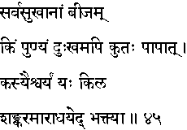
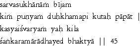

|

|
Verse 45 - Meaning:
Q:What (kim) is the source or seed (biijam) of all happiness (sarva-sukhaanaam) ?
A:The merits of one's good actions.(punyam).
Q:What causes (api kutah) misery (duhkham) to a man ?
A:One's sins.(paapaat)
Q:How does one get endowed with (kasya) Lordliness (aisvaryam) ?
A:Only by the (yah kila) devoted worship (aaraadhayed bhaktyaa) of Sankara (God) (sankaram).
|